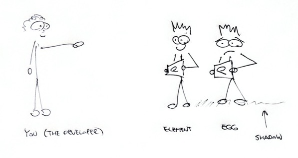

Variable Shadowing
True to the nature of this blog, this is an article about an intermediate software engineering topic. Nothing breathtaking if you’re a senior developer, but hopefully useful to some of the self-taught programmers out there.
Try to catch the bug in the following function:
void prepareDeliciousMeal(Fridge f) { final e = f.getEgg(); // ... more code ... final ingredients = f.everything .where((e) => e.goesWellWith.contains(e.id)); cook(ingredients); }
It’s a stupid bug, but that only makes it more infuriating when you finally catch it. The idea of the function is to prepare a meal by taking an egg, and then all the ingredients in the fridge that go well with it. But, because of the bug, we take all the ingredients that go well with themselves (which is, presumably, everything). So, instead of a delicious egg platter, you get a sad heap of food.
All that because we use the same e variable name for both the egg and
for each to the ingredients in the fridge. And we either don’t realize
it’s a problem, or we forget.
(Do you want examples that are less silly? Wikipedia delivers --- in Lua, Python, Rust, C++, Java and JavaScript.)
If you think this could never happen to you, consider that:
- I found a variable shadowing bug in my code just today.
- Less than a week ago, someone fixed a pretty major variable shadowing bug in OpenBSD (the UNIX distribution with emphasis on code quality).
8 . 0 . 1 The name
The idea behind the name “variable shadowing” is pretty straightforward.
The outer scope variable (the egg, in our case) is in the shadow of
the inner scope variable (the element in the where closure, in our
case).

I see it as two people standing exactly in line, having the same silhouette. You think you’re pointing at your old friend (egg) but in fact you’re pointing at some new dude (element) that stands directly in front of him.
8 . 0 . 2 Mitigation
If your language supports it, turn on a linter that warns about shadowing. Shadowing is easy to detect by automated tools like that. You’d think everyone would have that feature enabled.
But in reality, many people don’t. There are at least 2 reasons:
- Some people just don’t know there are linters available for their programming language.
- Others find lints annoying and turn them off.
Don’t be either of those people. Yes, configuring a static analysis tool can take time. Yes, when a strict linter is enabled, sometimes it seems like you’re not programming, you’re just appeasing a tool. “Oh, I’m sorry, Mr. Linter, I’m going to fix all the two hundred little nits you just found in my code. I’ll get right on it, sir.” Ugh. Such busywork.
Well, that busywork can help you uncover nasty little bugs before you even write them.
All that said, there are legitimate reasons to shadow identifiers. As always, expect exceptions. Just be on the look out for variable shadowing bugs. They’re widespread and nasty.